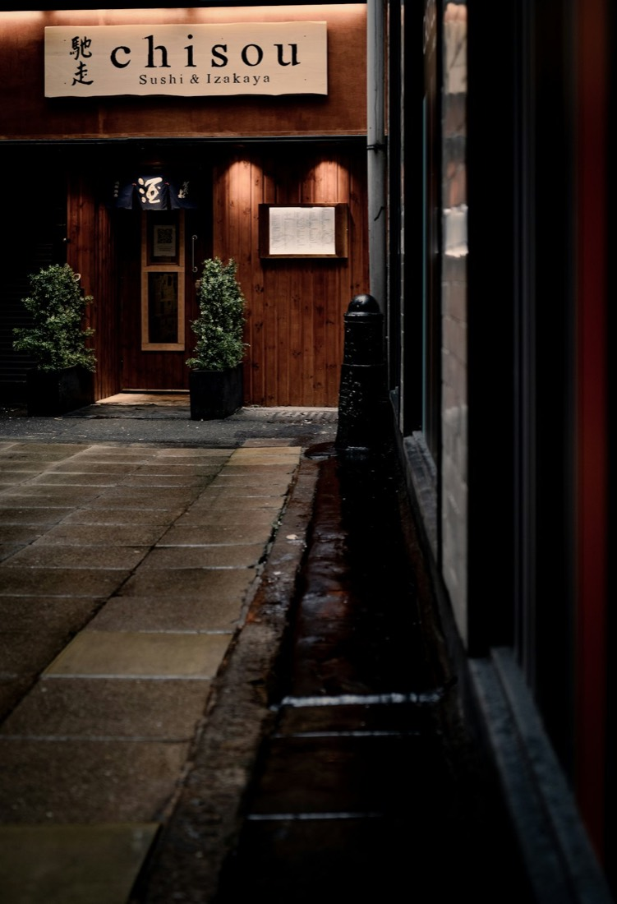
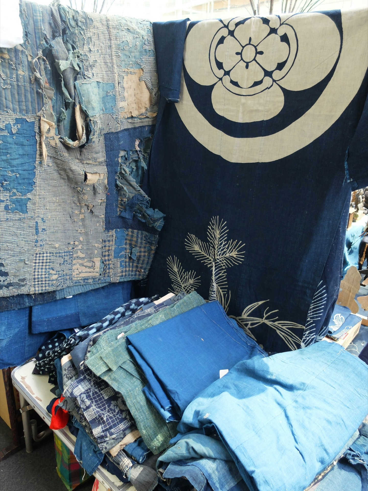
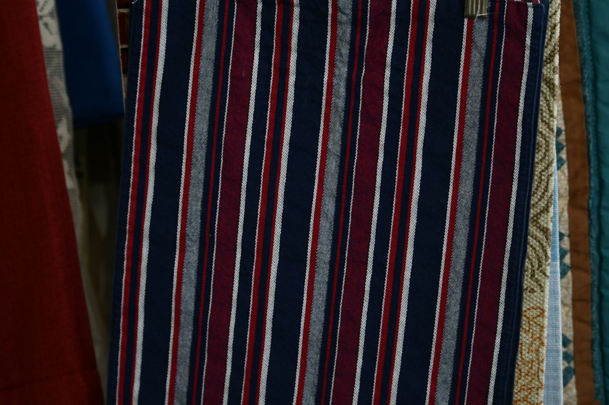
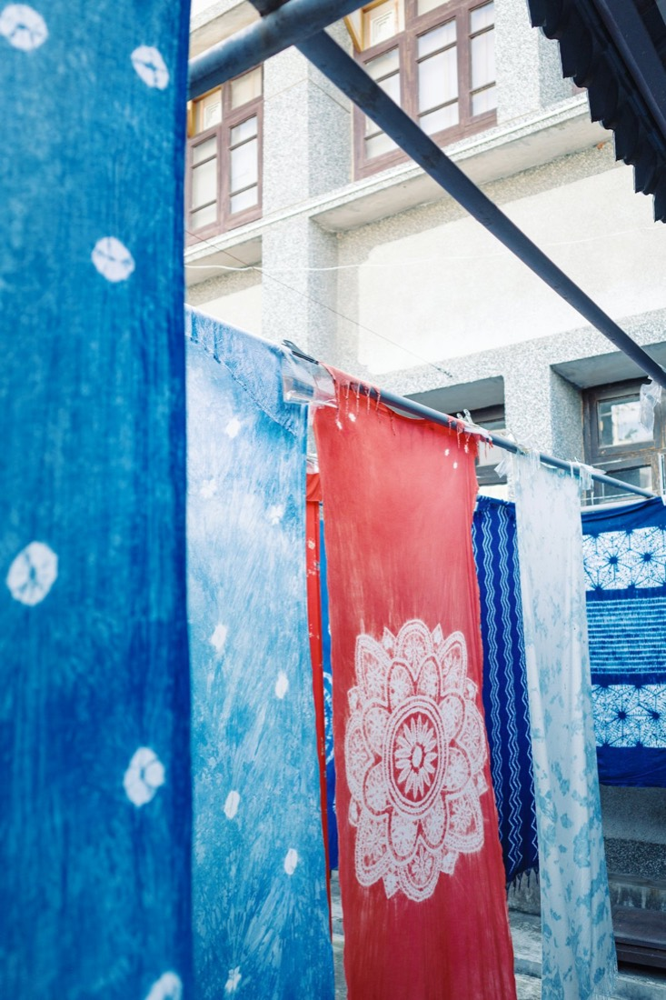
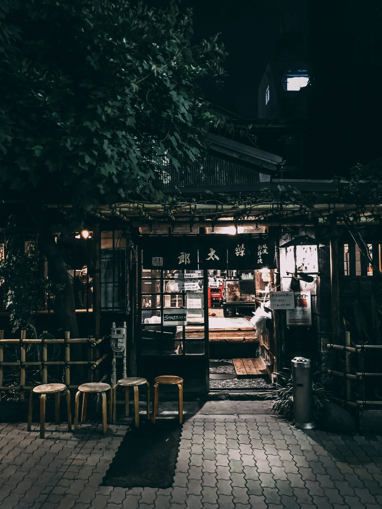

飲食店ののれん
らーめん、すし、そば・うどん、和食・居酒屋まで。

オーダーのれん製作の染物工房 神奈川県小田原市
日本伝統の「筒描染め・藍染め」技法による印染め。ロゴの作成から染め、仕立てまで、オリジナルのオーダーメイドで承ります。
のれんを、試しに染める
一間巾（150〜180cm）25,000円から
のれんの3Dイメージです。実際の書体や仕上がりとは異なります
筒描き染めは、餅米と米糠で作る糊を、柿渋で強くした和紙製の筒で、線や文字、模様を自在に描く、日本古来伝統の技法です。型で模様をつける技法を型染め、家紋や屋号を染め抜くことを印染めとよびます。
染元ならではの細やかな対応と、お求めやすい製作料金でお作りします。

らーめん、すし、そば・うどん、和食・居酒屋まで。

天竺木綿、シャークスキン、帆布、麻など。見本生地は送料無料でお送りします。

自由な発想を大事に、前後の文字の書体に合わせてアレンジします。

麻生地は5,000円プラスが目安です。価格は現在のホームページの表示をもとにしています。
| ご注文 | お電話・メールで承ります |
|---|---|
| 生地見本 | ご希望の方に、送料無料でお送りします |
ロゴの作成からご相談ください。